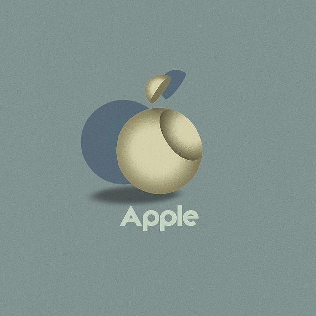
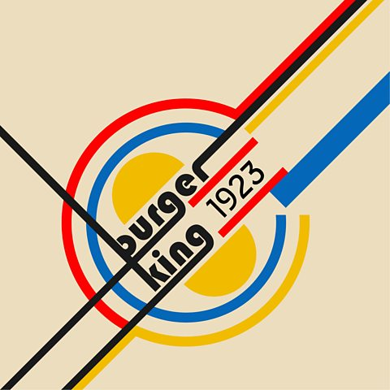
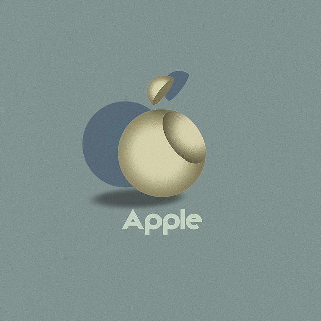
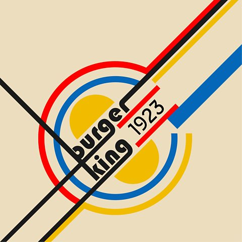
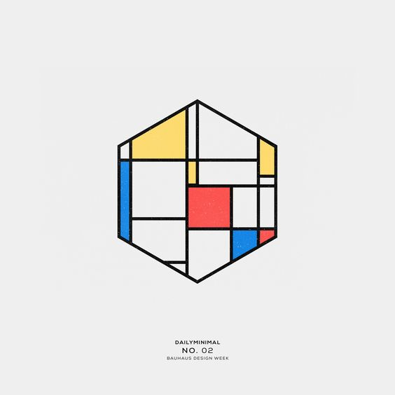
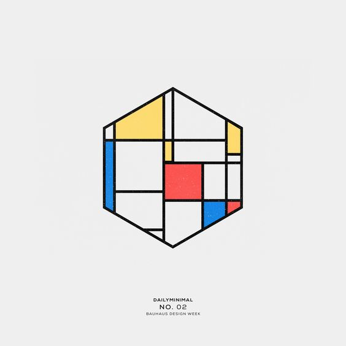
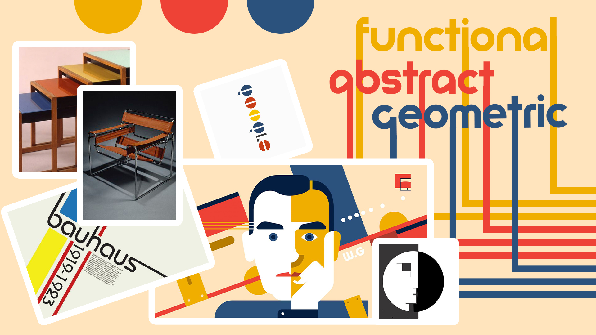
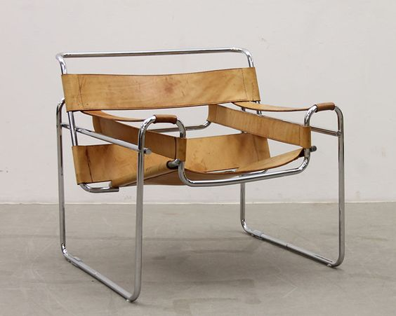

The origins of the Bauhaus lie in the late 19th century, in anxieties about the soullessness of modern manufacturing, and fears about art's loss of social relevance. The Bauhaus aimed to reunite fine art and functional design, creating practical objects with the soul of artworks. Not only did the Bauhaus style influence the approach and focus on the simplicity and functionality, it was also the prototype of the art school, as we know it today. Bauhaus—literally translated to “construction house”—originated as a German school of the arts in the early 20th century. Founded by Walter Gropius, the school eventually morphed into its own modern art movement characterized by its unique approach to architecture and design. The Bauhaus was arguably the single most influential modernist art school of the 20th century. Its approach to teaching, and to the relationship between art, society, and technology, had a major impact both in Europe and in the United States long after its closure under Nazi pressure in 1933. Today, Bauhaus is renowned for both its unique aesthetic that inventively combines the fine arts with arts and crafts as well as its enduring influence on modern and contemporary art.
 



 


The simple, rational, minimalistic, geometrical, and functional approach to aesthetics, formed a tremendously modern approach to design and art.
The style of Bauhaus is commonly characterized as a combination of the Arts and Crafts movement with modernism, as evident in its emphasis on function and, according to the Tate, its “aim to bring art back into contact with everyday life.” Thus, typical Bauhaus designs—whether evident in painting, architecture, or interior design—feature little ornamentation and a focus on balanced forms and abstract shapes. Bauhaus artists often produced abstract sculptures, avant-garde collages, and modernist posters featuring bold typography and blocks of color.
The practical crafts - architecture and interior design, textiles and woodwork - were placed on a par with fine arts such as sculpture and painting. The everyday objects, furniture, even buildings, needed to follow the less is more philosophy, due to the need of producing functionality above all, that would follow the modern ideas of looking at art and technology.
Similar to Bauhaus art, architecture in this style is characterized by harmoniously balanced geometric shapes and an emphasis on function. Featuring open plans and lots of glass, it is inspired by the simple yet polished look of the American Arts and Crafts movement. Furthermore, this modern architecture movement heavily inspired the look of mid-century modern homes, which borrow the clean lines and functional design of Bauhaus buildings. Bauhaus interiors are renowned for their simplicity and openness. Minimally adorned with iconic furniture—including the Wassily Chair, a model named after Kandinsky—and uncomplicated accents, they perfectly echo their exteriors.
Bauhaus Artists
Ranging from paintings and graphics to architecture and interiors, Bauhaus art dominated many outlets of experimental European art throughout the 1920s and 1930s. Though it is most closely associated with Germany, it attracted and inspired artists of all backgrounds. Today, its influence can be found in art and design all over the world, whether within the walls of a museum or on a suburban street.

Paul Klee: Red Balloon (1922)
In this canvas from 1922, delicate, translucent geometric shapes - squares, rectangles and domes - are picked out in gradations of primary color. A single red circle floats in the upper center, revealing itself, on inspection, to be the titular hot-air balloon. This illustrative flourish exemplifies Klee's whimsical, associative use of the geometric compositional arrangements for which the Bauhaus became famous.
Wassily Kandinsky: Yellow-Red-Blue (1925)
This complex work is built up around three key visual areas, dominated by yellow, red, and blue shapes respectively. A meshwork of straight and curvilinear interact across the canvas, as if playing out the battle of energies established between the different primary colors.
Marcel Breuer: Club Chair (Model B3) (The Wassily Chair) (1925)
The artist himself described the chair as "my most extreme work . . . the least artistic, the most logical, the least 'cozy' and the most mechanical." But it was also his most influential, exemplifying the groundbreaking developments in functional design that were marking out the Bauhaus by the mid-1920s. Lightweight, easily moved, and easily mass-produced, it met all the requirements of the school's design philosophy, its components arranged with a clarity that made its structure and purpose immediately legible.